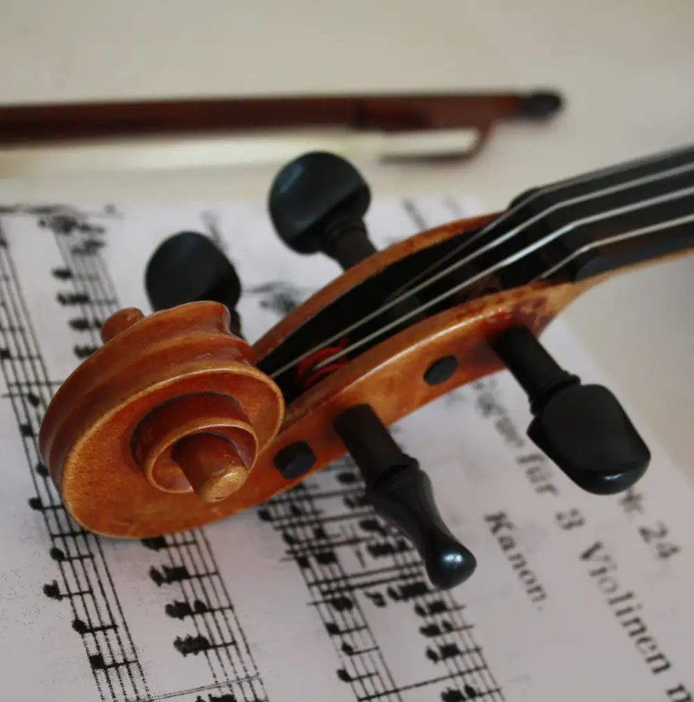

文章列表

因為自身曾走過許多彎路，在學習音樂上深深有感，不是那麼容易的事情。學習的路途上需要解決許多問題，包括樂器的選擇，教師的選擇，練習環境與地點，使用的課本，練習心態的變化，練習的時間等等，每一個選擇都要根據自身調整。
不過平常學習時，如果能掌握一些觀念，還是更容易打開我們的眼界的。這裡就提出幾個自身實踐，也覺得比較有效的學習方法：
##設定音樂目標，讓生活更有動力
"給予自己三天的時間，你是否能學習一首新作品呢？"
"一個月的時間，預約一個表演如何？"
"讓自己幾天後，一定要去找老師上一門課！"
這樣是不是很有挑戰性呢？如果覺得自訂挑戰很有意思，不如嘗試看看！覺得壓力太大的話，就給自己一些小一點的挑戰吧。比如說：
"練練幾個音樂上自己喜歡的段落，訂正幾個錯誤吧"
"練一下節奏或是音準；試試把譜背一小段起來？"
"今天用手機錄點自己的音樂聽聽看"
"出門去買一本新譜吧！"
"無聊的時候，隨便拿本譜來練練看如何？"
不論是給自己大的挑戰，或是小的目標，有更多的音樂等於讓每天更精彩。如果發現生活太疲勞了，休息也沒問題，重點在觀察音樂是否充實了你的生活？讓你覺得生活更有意思呢？
##模仿高手思維，進步得更快
以前在音樂學院學習時，雖然周圍有很多高手在技術上可以切磋，但長久以來，我覺得最有幫助的，是學習一些他們的思維。那麼是哪些思維呢？
比方說，在小提琴音準的控制上，高手會練一練就停下來唱一下，因為只要唱那一下，就可以把音拉得更準。比方說，練習時他們總是只練小片段，因為這樣練更能解決問題，效率更高。
其他幾個我覺得實用的思維：
i. 練不出來時，就去散步，讓大腦放鬆
ii. 不知道練什麼時，就練基礎：音准，節奏，音色
iii. 讓音樂與其他元素結合，更多的靈感
##接觸不同種類的音樂
這是之前在只學習一種音樂，是很可惜的事所提到的一個想法，我們接觸更多種類的音樂，回頭他們會幫助我們更加暸解音樂的本質。
音樂的種類很多，常見的有流行樂，古典樂，爵士樂，電影音樂，輕音樂，民族音樂，傳統音樂，金屬樂，電子音樂，原聲帶等。
放下只能學習其中一種的想法，多方面的接觸，一定會帶給你很多新的點子。
回上一頁